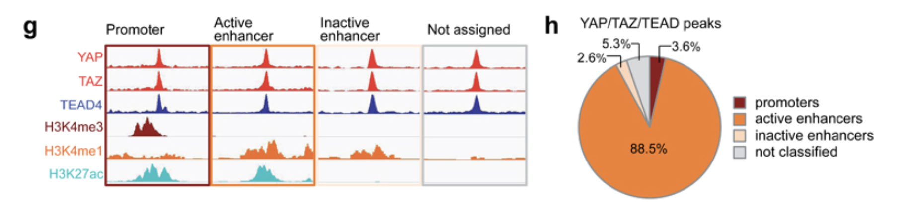
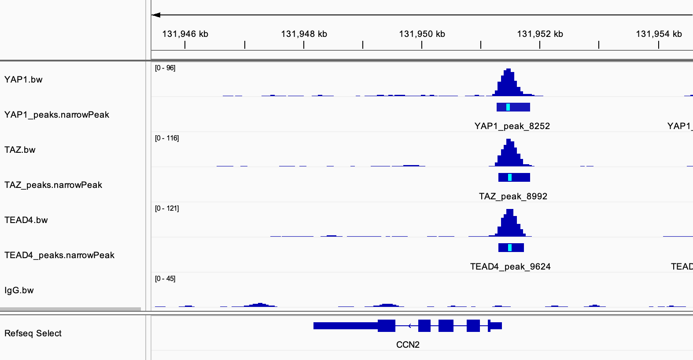
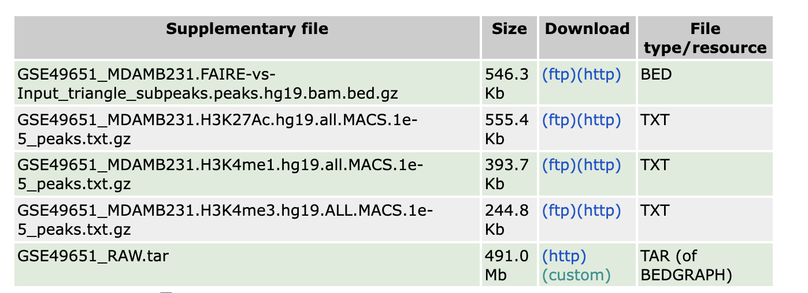
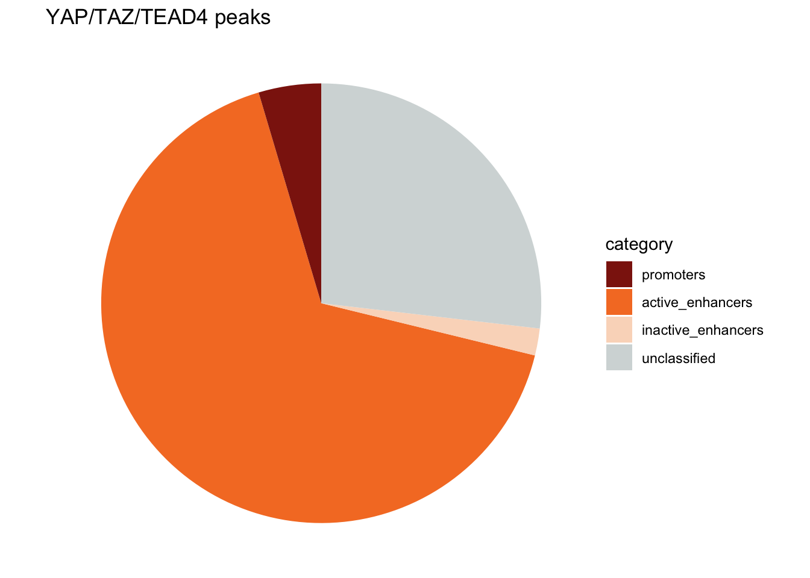

reproduce figure 1 g,h
2024-12-28
Last updated: 2025-01-04
Checks: 6 1
Knit directory:
reproduce_genomics_paper_figures/
This reproducible R Markdown analysis was created with workflowr (version 1.7.1). The Checks tab describes the reproducibility checks that were applied when the results were created. The Past versions tab lists the development history.
The R Markdown file has unstaged changes. To know which version of
the R Markdown file created these results, you’ll want to first commit
it to the Git repo. If you’re still working on the analysis, you can
ignore this warning. When you’re finished, you can run
wflow_publish to commit the R Markdown file and build the
HTML.
Great job! The global environment was empty. Objects defined in the global environment can affect the analysis in your R Markdown file in unknown ways. For reproduciblity it’s best to always run the code in an empty environment.
The command set.seed(20241226) was run prior to running
the code in the R Markdown file. Setting a seed ensures that any results
that rely on randomness, e.g. subsampling or permutations, are
reproducible.
Great job! Recording the operating system, R version, and package versions is critical for reproducibility.
Nice! There were no cached chunks for this analysis, so you can be confident that you successfully produced the results during this run.
Great job! Using relative paths to the files within your workflowr project makes it easier to run your code on other machines.
Great! You are using Git for version control. Tracking code development and connecting the code version to the results is critical for reproducibility.
The results in this page were generated with repository version 883cb56. See the Past versions tab to see a history of the changes made to the R Markdown and HTML files.
Note that you need to be careful to ensure that all relevant files for
the analysis have been committed to Git prior to generating the results
(you can use wflow_publish or
wflow_git_commit). workflowr only checks the R Markdown
file, but you know if there are other scripts or data files that it
depends on. Below is the status of the Git repository when the results
were generated:
Ignored files:
Ignored: .DS_Store
Ignored: .Rproj.user/
Ignored: analysis/.DS_Store
Ignored: data/fastq/
Ignored: data/public_data/
Ignored: data/reference/
Unstaged changes:
Modified: .gitignore
Modified: analysis/01_download_fastq_from_GEO.Rmd
Modified: analysis/02_align_to_hg38.Rmd
Modified: analysis/03_generate_bigwig.Rmd
Modified: analysis/04_figure1_a_b_c.Rmd
Modified: analysis/05_figure1_d_f.Rmd
Modified: analysis/06_figure1_g_h.Rmd
Modified: analysis/07_figure1_i_j_k.Rmd
Modified: analysis/08_homework.Rmd
Modified: analysis/_site.yml
Modified: analysis/about.Rmd
Note that any generated files, e.g. HTML, png, CSS, etc., are not included in this status report because it is ok for generated content to have uncommitted changes.
These are the previous versions of the repository in which changes were
made to the R Markdown (analysis/06_figure1_g_h.Rmd) and
HTML (docs/06_figure1_g_h.html) files. If you’ve configured
a remote Git repository (see ?wflow_git_remote), click on
the hyperlinks in the table below to view the files as they were in that
past version.
| File | Version | Author | Date | Message |
|---|---|---|---|---|
| Rmd | c9a4ca2 | crazyhottommy | 2024-12-31 | version 0.1 |
| html | c9a4ca2 | crazyhottommy | 2024-12-31 | version 0.1 |
Let’s re-create figure 1 g,h!

Figure 1g
Figure 1g is an IGV track
view. We already generated the bigwig files and we can easily load them
to IGV and take a screenshot.
Below is one of the known YAP1 target gene CCN2:

The paper also shows H3K4me1, H3K4me3 and H3K27ac tracks which the author analyzed from a previous dataset for MDA-MB-231 breast cancer cell line.
I will leave the analysis from the raw fastq files as an exercise for you.
plot the tracks from scratch
If you look carefully, the genome track view for the bigwig files is just a histogram.
If you want to plot the bigwig signal tracks:
take a look at plotgardner bioconductor package.
karyoploteR I used for my scATACutils package for plotting scATACseq tracks.
pyGenometracks in
python.
Figure 1h
Figure 1h is a pie chart showing the proportion of the annotation of the YAP/TAZ/TEAD4 common peaks. The annotations are: promoters, active enhancers, inactive enhancers and not classified.
- promoters are YAP/TAZ/TEAD4 peaks overlapping with H3K4me3 peaks
- active enhancers are YAP/TAZ/TEAD4 peaks overlapping with H3K4me1 and H3K27ac peaks
- inactive enhancers are YAP/TAZ/TEAD4 peaks overlapping with H3K4me1 but not H3K37ac peaks
Read this classic ChIP-seq paper from Keji Zhao’s group to understand what genomic features those histone modifications are associated with.
To do this, I will download the H3K4me1, H3K4me3 and H3K27ac peaks from https://www.ncbi.nlm.nih.gov/geo/query/acc.cgi?acc=GSE49651.
 click the ftp or
http in the link above, and you will download the
peaks.txt.gz files.
Note, the data were aligned to hg19 human genome. We did our alignment using hg38 genome. We will need to lift-over the hg19 peak files to hg38 version.
ls data/public_data
GSE49651_MDAMB231.H3K27Ac.hg19.all.MACS.1e-5_peaks.txt.gz GSE49651_MDAMB231.H3K4me3.hg19.ALL.MACS.1e-5_peaks.txt.gz
GSE49651_MDAMB231.H3K4me1.hg19.all.MACS.1e-5_peaks.txt.gz
Download the chain file from UCSC https://hgdownload.soe.ucsc.edu/goldenpath/hg19/liftOver/ and the command line tool from https://hgdownload.soe.ucsc.edu/admin/exe/
curl -O https://hgdownload.soe.ucsc.edu/goldenpath/hg19/liftOver/hg19ToHg38.over.chain.gz
# I am using a macs with arm64 system
curl -O https://hgdownload.soe.ucsc.edu/admin/exe/macOSX.arm64/liftOver
# make it executable
chmod u+x liftOverNow, we are ready to lift-over the coordinates from hg19 to hg38:
./liftOver GSE49651_MDAMB231.H3K27Ac.hg19.all.MACS.1e-5_peaks.txt.gz hg19ToHg38.over.chain.gz H3K27ac.bed unmapped1.bed
./liftOver GSE49651_MDAMB231.H3K4me3.hg19.ALL.MACS.1e-5_peaks.txt.gz hg19ToHg38.over.chain.gz H3K4me3.bed unmapped2.bed
./liftOver GSE49651_MDAMB231.H3K4me1.hg19.all.MACS.1e-5_peaks.txt.gz hg19ToHg38.over.chain.gz H3K4me1.bed unmapped3.bed
# how many peaks after the liftover
wc -l *bed
37480 H3K27ac.bed
26765 H3K4me1.bed
17991 H3K4me3.bed
30 unmapped1.bed
56 unmapped2.bed
12 unmapped3.bedAgain, we can use bedtools to do all those intersections
and annotate the YAP1/TAZ/TEAD4 peaks. I will keep everything in R
instead:
library(rtracklayer) # for reading in bed file
library(here)
library(dplyr)
library(ggplot2)
TAZ_peaks<- import(here("data/fastq/TAZ_peak/TAZ_peaks.narrowPeak"))
YAP_peaks<- import(here("data/fastq/YAP_peak/YAP_peaks.narrowPeak"))
TEAD4_peak<- import(here("data/fastq/TEAD4_peak/TEAD4_peaks.narrowPeak"))
YAP_overlap_TAZ_peaks<- subsetByOverlaps(YAP_peaks, TAZ_peaks)
YAP_overlap_TAZ_peaks_overlap_TEAD4<- subsetByOverlaps(YAP_overlap_TAZ_peaks, TEAD4_peak)
YAP_overlap_TAZ_peaks_overlap_TEAD4#> GRanges object with 5965 ranges and 6 metadata columns:
#> seqnames ranges strand | name score
#> <Rle> <IRanges> <Rle> | <character> <numeric>
#> [1] chr1 1024628-1025059 * | YAP_peak_3 494
#> [2] chr1 1264837-1265155 * | YAP_peak_4 148
#> [3] chr1 1265320-1265695 * | YAP_peak_5 131
#> [4] chr1 1360618-1360955 * | YAP_peak_6 306
#> [5] chr1 1659298-1659586 * | YAP_peak_8 45
#> ... ... ... ... . ... ...
#> [5961] chrX 154368850-154369243 * | YAP_peak_9801 90
#> [5962] chrX 154596614-154596846 * | YAP_peak_9802 120
#> [5963] chrX 154600351-154600918 * | YAP_peak_9803 131
#> [5964] chrX 154732680-154732891 * | YAP_peak_9804 58
#> [5965] chrX 155888248-155888487 * | YAP_peak_9806 108
#> signalValue pValue qValue peak
#> <numeric> <numeric> <numeric> <integer>
#> [1] 16.37320 54.3883 49.46070 192
#> [2] 8.81841 18.8472 14.89750 188
#> [3] 8.62413 17.0083 13.14010 112
#> [4] 14.37360 35.1297 30.64260 148
#> [5] 5.06808 7.8940 4.58709 102
#> ... ... ... ... ...
#> [5961] 6.13997 12.64820 9.00333 237
#> [5962] 8.21346 15.84150 12.02720 128
#> [5963] 8.62413 17.00830 13.14010 417
#> [5964] 5.74942 9.32421 5.89513 78
#> [5965] 6.72473 14.58900 10.84320 151
#> -------
#> seqinfo: 27 sequences from an unspecified genome; no seqlengthsread in the histone modification peaks:
H3K4me1<- import(here("data/public_data/H3K4me1.bed"))
H3K4me3<- import(here("data/public_data/H3K4me3.bed"))
H3K27ac<- import(here("data/public_data/H3K27ac.bed"))From the method section:
The presence of H3K4me1 and H3K4me3 peaks, their genomic locations and their overlap were the criteria used to define promoters and enhancers: i) H3K4me3 peaks not overlapping with H3K4me1 peaks and close to a TSS (± 5kb) were defined as promoters, as NA otherwise; ii) H3K4me1 peaks not overlapping with H3K4me3 peaks were defined as enhancers; iii) regions with the co-presence of H3K4me1 and H3K4me3 peaks were visually inspected on IGV and were defined as promoters, enhancers or NA after the evaluation of the proximity to a TSS and the comparison of the enrichment signals. Finally, promoters or enhancers were defined as active if overlapping with H3K27ac peaks.
Define (in)active enhancers:
active_enhancers<- subsetByOverlaps(H3K4me1, H3K27ac)
inactive_enhancers<- subsetByOverlaps(H3K4me1, H3K27ac, invert=TRUE)
promoters<- subsetByOverlaps(H3K4me3, H3K4me1, invert=TRUE)YAP/TAZ/TEAD peaks annotation YAP/TAZ/TEAD peaks were annotated as promoters or enhancers if their summit was overlapping with promoter or enhancer regions as defined above. Peaks with the summit falling in regions with no H3K4me1 or H3K4me3 peaks, or in NA regions were defined as “not assigned” and discarded from subsequent analyses.
n_active_enhancers<- subsetByOverlaps(YAP_overlap_TAZ_peaks_overlap_TEAD4,
active_enhancers) %>%
length()
n_inactive_enhancers<- subsetByOverlaps(YAP_overlap_TAZ_peaks_overlap_TEAD4,
inactive_enhancers) %>%
length()
n_promoters<- subsetByOverlaps(YAP_overlap_TAZ_peaks_overlap_TEAD4,
promoters) %>%
length()
n_unclassified<- length(YAP_overlap_TAZ_peaks_overlap_TEAD4) - n_active_enhancers -
n_inactive_enhancers - n_promotersPut the numbers in a dataframe:
annotation_df<- data.frame(category = c("active_enhancers", "inactive_enhancers",
"promoters", "unclassified"),
peak_number = c(n_active_enhancers, n_inactive_enhancers,
n_promoters, n_unclassified))
annotation_df#> category peak_number
#> 1 active_enhancers 3972
#> 2 inactive_enhancers 118
#> 3 promoters 274
#> 4 unclassified 1601Let’s plot a pie chart!
library(ggplot2)
ggplot(annotation_df, aes(x = "", y = peak_number, fill = category)) +
geom_bar(stat = "identity", width = 1) +
coord_polar("y", start = 0) +
theme_void() + # Remove unnecessary axes
labs(title = "YAP/TAZ/TEAD4 peaks") +
scale_fill_brewer(palette = "Set3") 
| Version | Author | Date |
|---|---|---|
| c9a4ca2 | crazyhottommy | 2024-12-31 |
change the order of the categories by changing the factor level
annotation_df$category<- factor(annotation_df$category,
levels = c("promoters", "active_enhancers",
"inactive_enhancers", "unclassified"))
colors<- c("#8D1E0F", "#F57D2B", "#FADAC4", "#D4DADA")
ggplot(annotation_df, aes(x = "", y = peak_number, fill = category)) +
geom_bar(stat = "identity", width = 1) +
coord_polar("y", start = 0) +
theme_void() + # Remove unnecessary axes
labs(title = "YAP/TAZ/TEAD4 peaks") +
scale_fill_manual(values = colors)
| Version | Author | Date |
|---|---|---|
| c9a4ca2 | crazyhottommy | 2024-12-31 |
Note, the authors re-called the peaks using their own IgG sample:
Peak calls and read density tracks were generated using SPP version 1.1148 with default parameters and using as control sample the IgG ChIP-seq data generated in our laboratory because of the low sequencing depth of the Input DNA contained in SRP028597.
This can cause drastically different number of H3K4me1/3 and H3K27ac peaks. It is not surprising to me that we now have a lot of unclassified peaks.
Add the percentage to the pie chart
# Calculate percentages and cumulative positions for labeling
annotation_df <- annotation_df %>%
dplyr::mutate(
percentage = peak_number / sum(peak_number) * 100,
label = paste0(round(percentage, 1), "%")
)
annotation_df#> category peak_number percentage label
#> 1 active_enhancers 3972 66.588433 66.6%
#> 2 inactive_enhancers 118 1.978206 2%
#> 3 promoters 274 4.593462 4.6%
#> 4 unclassified 1601 26.839899 26.8%# Create the pie chart
ggplot(annotation_df, aes(x = "", y = peak_number, fill = category)) +
geom_bar(stat = "identity", width = 1) +
coord_polar("y", start = 0) +
theme_void() + # Remove unnecessary axes
labs(title = "YAP/TAZ/TEAD4 peaks") +
scale_fill_manual(values = colors) +
geom_text(aes(label = label), position = position_stack(vjust = 0.5)) # Add percentage labels
| Version | Author | Date |
|---|---|---|
| c9a4ca2 | crazyhottommy | 2024-12-31 |
Although we have a bigger proportion of unclassified peaks, the conclusion is the same: A large proportion of the YAP1/TAZ/TEAD4 peaks are located at active enhancers.
sessionInfo()#> R version 4.4.1 (2024-06-14)
#> Platform: aarch64-apple-darwin20
#> Running under: macOS Sonoma 14.1
#>
#> Matrix products: default
#> BLAS: /Library/Frameworks/R.framework/Versions/4.4-arm64/Resources/lib/libRblas.0.dylib
#> LAPACK: /Library/Frameworks/R.framework/Versions/4.4-arm64/Resources/lib/libRlapack.dylib; LAPACK version 3.12.0
#>
#> locale:
#> [1] en_US.UTF-8/en_US.UTF-8/en_US.UTF-8/C/en_US.UTF-8/en_US.UTF-8
#>
#> time zone: America/New_York
#> tzcode source: internal
#>
#> attached base packages:
#> [1] stats4 stats graphics grDevices utils datasets methods
#> [8] base
#>
#> other attached packages:
#> [1] ggplot2_3.5.1 dplyr_1.1.4 here_1.0.1
#> [4] rtracklayer_1.64.0 GenomicRanges_1.56.1 GenomeInfoDb_1.40.1
#> [7] IRanges_2.38.1 S4Vectors_0.42.1 BiocGenerics_0.50.0
#> [10] workflowr_1.7.1
#>
#> loaded via a namespace (and not attached):
#> [1] tidyselect_1.2.1 farver_2.1.2
#> [3] Biostrings_2.72.1 bitops_1.0-8
#> [5] fastmap_1.2.0 RCurl_1.98-1.16
#> [7] GenomicAlignments_1.40.0 promises_1.3.0
#> [9] XML_3.99-0.17 digest_0.6.36
#> [11] lifecycle_1.0.4 processx_3.8.4
#> [13] magrittr_2.0.3 compiler_4.4.1
#> [15] rlang_1.1.4 sass_0.4.9
#> [17] tools_4.4.1 utf8_1.2.4
#> [19] yaml_2.3.10 knitr_1.48
#> [21] S4Arrays_1.4.1 labeling_0.4.3
#> [23] curl_5.2.1 DelayedArray_0.30.1
#> [25] RColorBrewer_1.1-3 abind_1.4-5
#> [27] BiocParallel_1.38.0 withr_3.0.0
#> [29] grid_4.4.1 fansi_1.0.6
#> [31] git2r_0.35.0 colorspace_2.1-1
#> [33] scales_1.3.0 SummarizedExperiment_1.34.0
#> [35] cli_3.6.3 rmarkdown_2.27
#> [37] crayon_1.5.3 generics_0.1.3
#> [39] rstudioapi_0.16.0 httr_1.4.7
#> [41] rjson_0.2.22 cachem_1.1.0
#> [43] stringr_1.5.1 zlibbioc_1.50.0
#> [45] parallel_4.4.1 XVector_0.44.0
#> [47] restfulr_0.0.15 matrixStats_1.3.0
#> [49] vctrs_0.6.5 Matrix_1.7-0
#> [51] jsonlite_1.8.8 callr_3.7.6
#> [53] jquerylib_0.1.4 glue_1.7.0
#> [55] codetools_0.2-20 ps_1.7.7
#> [57] stringi_1.8.4 gtable_0.3.5
#> [59] later_1.3.2 BiocIO_1.14.0
#> [61] UCSC.utils_1.0.0 munsell_0.5.1
#> [63] tibble_3.2.1 pillar_1.9.0
#> [65] htmltools_0.5.8.1 GenomeInfoDbData_1.2.12
#> [67] R6_2.5.1 rprojroot_2.0.4
#> [69] evaluate_0.24.0 Biobase_2.64.0
#> [71] lattice_0.22-6 highr_0.11
#> [73] Rsamtools_2.20.0 httpuv_1.6.15
#> [75] bslib_0.8.0 Rcpp_1.0.13
#> [77] SparseArray_1.4.8 whisker_0.4.1
#> [79] xfun_0.46 fs_1.6.4
#> [81] MatrixGenerics_1.16.0 getPass_0.2-4
#> [83] pkgconfig_2.0.3